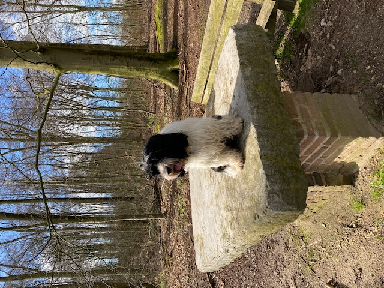
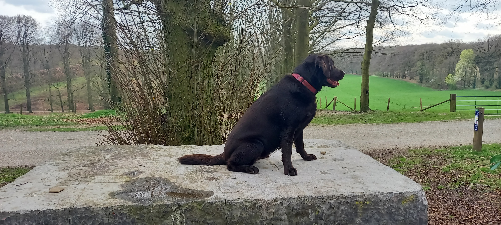

Fotoarchief Stenen Tafel

Sunday, 7 April 2024 at 11:25

Sunday, 7 April 2024 at 08:27

Saturday, 6 April 2024 at 16:09
Friday, 5 April 2024 at 17:51
Monday, 1 April 2024 at 18:54

Monday, 1 April 2024 at 17:36

Monday, 1 April 2024 at 14:26

Sunday, 31 March 2024 at 16:36

Sunday, 31 March 2024 at 15:50

Saturday, 30 March 2024 at 14:30

Thursday, 28 March 2024 at 19:36

Tuesday, 26 March 2024 at 13:26
Hoi! Dit is de website van een kunstproject over de Stenen Tafel op Landgoed Mariendaal, dichtbij Arnhem, NL. Hiervoor verzamel ik veel beeldmateriaal, met als einddoel om een animatiefilm en/of boekje te maken, die uiteindelijk op locatie getoond zal worden. Op deze website zijn ingezonden foto’s te zien, genomen door voorbijgangers die op de oproep op locatie hebben gereageerd. Je eigen foto kan je insturen naar stenentafelfoto@gmail.com.
Hi! This is the website of an art project about the Stenen Tafel (Stone Table) at Landgoed Mariendaal, near Arnhem, the Netherlands. For this project I am collecting a lot of image material, with an end goal to create an animation video and/or book, which will eventually be shown on location. This website shows photos that were sent in by passers-by, who responded to the call on location. You can send your own photo to stenentafelfoto@gmail.com.